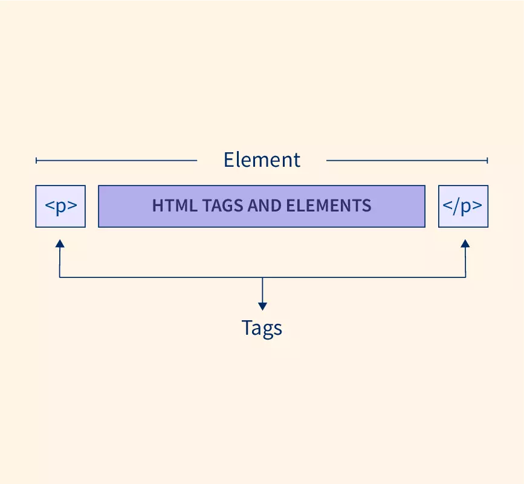

The div tag is known as Division tag. The div tag is used in HTML to make divisions of content on the web page like (text, images, header, footer, navigation bar, etc). Div tag has both opening div and closing tags and it is mandatory to close the tag. As we know Div tag is a block-level tag. In this example, the div tag contains the entire width. It will be displayed div tag each time on a new line, not on the same line.
The HTML span element is a generic inline container for inline elements and content. It used to group elements for styling purposes (by using the class or id attributes). A better way to use it when no other semantic element is available. The span tag is very similar to the div tag, but div is a block-level tag and span is an inline tag.
| Class | IDs |
|---|---|
|
|
A self-closing tag in HTML is a kind of HTML tag that does not need to be closed manually by its closing tag, which means it does not have a separate closing tags.
examples:-HTML defines six levels of headings, and these heading elements are H1, H2, H3, H4, H5, and H6. The H1 element is the highest or most important level, and the H6 element is the least important. These different heading levels help to communicate the organization and hierarchy of the content on a page.
h1 headings should be used for main headings, followed by h2 headings, then the less important h3 , and so on. Note: Use HTML headings for headings only. Don't use headings to make text BIG or bold.
Block elements always start from a new line. Inline elements never start from a new line. Block elements cover space from left to right as far as it can go. Inline elements only cover the space as bounded by the tags in the HTML element.
With the "strong" tag, you can bold a part of the text. You can signify that the content there is "more important", while with the "em" tag you can put a text in italics.
General consensus is that 'em' and 'strong' should be used as they indicate semantic meaning (i.e. 'This text or word is more important than the others') as well as how the text should look (i.e. 'This word should be bold or italic'), whereas 'b'and 'i' only do the latter.
HTML attributes provide additional information about HTML elements.An HTML attribute is a piece of markup language used to adjust the behavior or display of an HTML element. For example, attributes can be used to change the color, size, or functionality of HTML elements.
example:- name, value, height, width, type etc.HTML Tags are building blocks of HTML Page. HTML Elements are components that are used in HTML Page. HTML Tags usually exist in pairs consisting of a starting and an ending tag. However, some tags do not have a closing tag.
